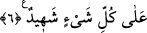

idi. Son görüşe göre bunun tersi olduğu söylenmiştir.
Âyet-i kerîmede şuna işâret edilmektedir: İnkârcıların karşı çıktıkları kimseler,
varlıkları Allah’ın muhabbetiyle gerçekleşen ve O’nun esmâsıyla toplanan dinin
yardımcıları velîlerdir. Rasûlullah’ın yardımcıları ve vârisleri olan, dinlerin
hükümlerine uyan, bu hükümlerin kabul edilmesi gerektiği konusunda en güçlü deliller
ve en açık burhanları, açık kerametleriyle ve üstün ilimleri yaymak sûretiyle
göstermişlerdir. Nasıl olmasın ki, onların Allah’a olan dostluklarının sağlıklı olduğu ve
âlimlerin Rasûlullah’a vârislikleri konusunda apaçık âyetler indirmişizdir. Onları inkâr
karanlıklarının örtüleriyle perdelemek isteyenlere son derece şiddetli, kesin ve
ayırmaksızın küçük düşürücü bir azap vardır.
6. O gün Allah onların hepsini diriltecek ve yaptıklarını kendilerine haber
verecektir. Allah onları bir bir saymıştır. Onlar ise unutmuşlardır. Allah her şeye
şâhiddir.
“O gün Allah onların hepsini diriltecek…” Âyet-i kerîmede geçen Yevme zarfı,
büyük ve korkulacak bir gün olduğunu belirtmek üzere hatırla anlamındaki gizli üzkür
fiiliyle mansub kılınmıştır. O günden maksad kıyamet günüdür. Yâni Allah onların
tümünü öldükten sonra yaptıklarının karşılığını vermek üzere diriltecektir. Cemîan
kelimesi, yeb’asühüm/onların hepsini diriltecek anlamındaki fiilin cemî zamirini
pekiştiren tekid için olmak üzere “hepsini, diriltilmemiş bir tek kişi kalmamak üzere”
demektir. Veya “bir tek durumda birleşmiş oldukları halde” anlamında olmak üzere
zamirden haldir.
“Ve yaptıklarını kendilerine haber verecektir.” Kendilerinden çıkan kötü ve çirkin
hareketleri açıklayacak veya bu yaratılma sırasında buna uygun korkunç bir tarzda,
onların bu kötü hallerini herkesin gözü önünde teşhir etmek, onları mahcup etmek ve
azaplarını şiddetlendirmek için tasvir edip canlandıracaktır. Aksi halde onların
yaptıklarını onlara haber vermenin bir anlamı olmazdı.
“Allah onları bir bir saymıştır.” Burada sanki; “çeşitli ve dağınık yerlerde işlenip
gitmiş, gözle görülmeyen, herhangi bir yer işgal etmeyen amellerini onlara Allah Teâlâ
nasıl haber verecek?” diye bir soru sorulmuş, bu soruya cevab olarak da şöyle
buyrulmuştur: Allah onları bir bir saymıştır. Yâni onları sayı olarak kuşatıp, hiç biri
kaybolmamak ve kaçmamak üzere işlemiş oldukları gibi muhafaza etmiştir.
Râğıb demiştir ki: “Ihsâ” bir şeyin sayısının kaç olduğunu bilmektir. Bu “ahsaytu: ben
saydım” sözcüğünden alınmıştır. Araplar parmak sayısına itimad edip güvendiklerinden
dolayı bu ifâde kullanılmıştır. Bazı âlimler de şöyle demişlerdir: “İhsâ” kuşatarak ve